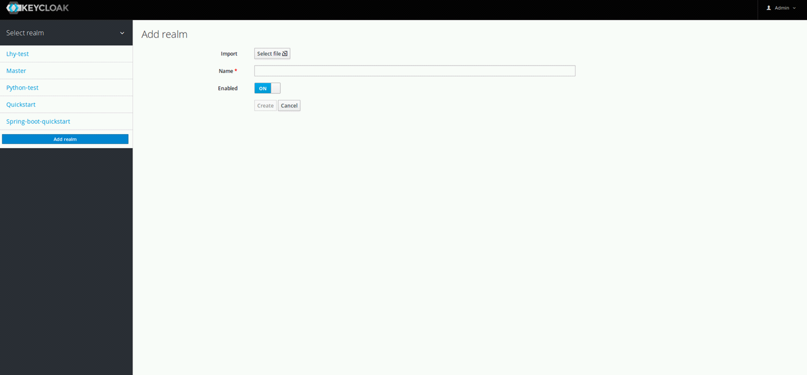

1.创建realm
2.配置client
将localhost和端口换成相应的应用服务器地址和端口即可，其他保持一致
创建三个角色，login，admin和user
创建两个用户lhy和lei分别赋予admin和user角色
将localhost和端口换成相应的应用服务器地址和端口即可，其他保持一致
创建三个角色，login，admin和user
创建两个用户lhy和lei分别赋予admin和user角色